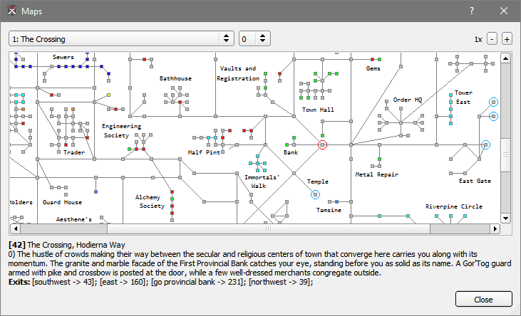

Frostbite
A frontend for Dragonrealms MUD
2.2 Maps
Frostbite frontend loosely follows the Genie Map schema to process and display maps. Map files have to be placed in the maps folder during application start up and any changes to map files require a restart to take effect.
Genie Map files are available to download at https://sourceforge.net/p/geniemapsfordr/Genie3Maps/HEAD/tree -> Download Snapshot.
Map
To open the map dialog window press right click on the map window and open view maps option.
| Legend: | |||
 current/selected location current/selected location |
Homes | Point of interest | Resting area |
 connecting node connecting node |
Trainer | Water | Guild |
 node ID node ID |
Portal | Deep water | Shop |
| Altar | Lumber | Mine | |
Map movement and functions
Map consists of nodes (rooms) and arcs (movement paths). Map nodes can be selected using the left mouse click. The selected node (red circle) is used as a point of origin in all calculations involved.
Map window automatically tries to keep track of room locations by matching the room title, description and movement paths but is not always able to find rooms due to having identical rooms or invalid room data. Node destination IDs can be viewed by hovering mouse cursor over the map node and can be used to find paths between originating node and destination node.
Maps can be viewed both in the map window and in the map dialog. To open the map dialog press right click on the map window and open the map dialog from the menu. Map node descriptions are only available in map dialog window.
Map data can be accessed through the scripting API. It's only possible to find paths between two nodes that are located in the same map zone. The movement paths are found using a simple breadth-first search algorithm and do not always correlate to best paths to take in game and should be be used accordingly.